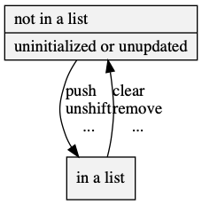

list.h
Source src/list.h; examples test/test_list.c.
Doubly-linked component

In parlance of Thareja 2014, Structures, <L>list is a circular header, or sentinel, to a doubly-linked list of <L>listlink. This allows it to benefit from being closed structure, such that with with a pointer to any element, it is possible to extract the entire list.
- Parameter: LIST_NAME
<L> that satisfies C naming conventions when mangled; required. <PL> is private, whose names are prefixed in a manner to avoid collisions.- Parameter: LIST_EXPECT_TRAIT
- Do not un-define certain variables for subsequent inclusion in a trait.
- Parameter: LIST_COMPARE_NAME, LIST_COMPARE, LIST_IS_EQUAL
- Compare trait contained in src/list_coda.h. An optional mangled name for uniqueness and a function implementing either <PLC>compare_fn or <PLC>bipredicate_fn.
- Parameter: LIST_TO_STRING_NAME, LIST_TO_STRING
- To string trait contained in to_string.h. An optional mangled name for uniqueness and function implementing <PSZ>to_string_fn.
- Standard:
- C89
typedef void(*<PL>action_fn)(struct <L>listlink *);
Operates by side-effects on the node.
typedef int(*<PL>predicate_fn)(const struct <L>listlink *);
Returns (Non-zero) true or (zero) false when given a node.
typedef void(*<PSZ>to_string_fn)(const <PSZ>type *, char(*)[12]);
to_string.h: responsible for turning the argument into a 12-char null-terminated output string. <PSZ>type is contracted to be an internal iteration type of the box.
typedef int(*<PLC>bipredicate_fn)(const struct <L>listlink *, const struct <L>listlink *);
Returns a boolean given two read-only <L>listlink.
typedef int(*<PLC>compare_fn)(const struct <L>listlink *a, const struct <L>listlink *b);
Three-way comparison on a totally order set of <L>listlink; returns an integer value less then, equal to, greater then zero, if a < b, a == b, a > b, respectively.
struct <L>listlink { struct <L>listlink *next, *prev; };
Storage of this structure is the responsibility of the caller, who must provide a stable pointer while it's in the list. Generally, one encloses this in a host struct or union. Multiple independent lists can be in the same host, however one link can can only be a part of one list at a time. Adding a link to a second list destroys the integrity of the original list, as does moving a pointer, (specifically, arrays that might increase in size.)

struct <L>list { union { struct { struct <L>listlink head, *part_of_tail; } as_head; struct { struct <L>listlink *part_of_head, tail; } as_tail; struct { struct <L>listlink *next, *zero, *prev; } flat; } u; };
Serves as head and tail for linked-list of <L>listlink. Use <L>list_clear to initialize the list. Because this list is closed; that is, given a valid pointer to an element, one can determine all others, null values are not allowed and it is not the same as {0}. In a valid list, as_head.head.tail, as_tail.tail.head, and flat.zero, refer to the same sentinel element, and it's always the only one null. If the address changes, one must call <L>list_self_correct.

struct <PL>iterator { struct <L>listlink *link; };
Contains all iteration parameters. (Since this is a permutation, the iteration is defined by none other then itself. Used for traits.)
| Modifiers | Function Name | Argument List |
|---|
| static struct <L>listlink * | <L>list_head | list |
| static struct <L>listlink * | <L>list_tail | list |
| static struct <L>listlink * | <L>list_previous | link |
| static struct <L>listlink * | <L>list_next | link |
| static void | <L>list_clear | list |
| static void | <L>list_add_before | anchor, add |
| static void | <L>list_add_after | anchor, add |
| static void | <L>list_push | list, add |
| static void | <L>list_unshift | list, add |
| static void | <L>list_remove | node |
| static struct <L>listlink * | <L>list_shift | list |
| static struct <L>listlink * | <L>list_pop | list |
| static void | <L>list_to | from, to |
| static void | <L>list_to_before | from, anchor |
| static void | <L>list_to_if | from, to, predicate |
| static void | <L>list_for_each | list, action |
| static struct <L>listlink * | <L>list_any | list, predicate |
| static void | <L>list_self_correct | list |
| static const char * | <SZ>to_string | box |
| static int | <LC>compare | alist, blist |
| static void | <LC>sort | list |
| static void | <LC>subtraction_to | a, b, result |
| static void | <LC>union_to | a, b, result |
| static void | <LC>intersection_to | a, b, result |
| static void | <LC>xor_to | a, b, result |
| static int | <LC>is_equal | lista, listb |
| static void | <LC>duplicates_to | from, to |
static struct <L>listlink *<L>list_head(const struct <L>list *const list)
- Return:
- A pointer to the first element of
list, if it exists.
- Order:
- Θ(1)
static struct <L>listlink *<L>list_tail(const struct <L>list *const list)
- Return:
- A pointer to the last element of
list, if it exists.
- Order:
- Θ(1)
static struct <L>listlink *<L>list_previous(struct <L>listlink *link)
- Return:
- The previous element. When
link is the first element, returns null.
- Order:
- Θ(1)
static struct <L>listlink *<L>list_next(struct <L>listlink *link)
- Return:
- The next element. When
link is the last element, returns null.
- Order:
- Θ(1)
static void <L>list_clear(struct <L>list *const list)
Clears and initializes list.
- Order:
- Θ(1)
static void <L>list_add_before(struct <L>listlink *const anchor, struct <L>listlink *const add)
add before anchor.
- Order:
- Θ(1)
static void <L>list_add_after(struct <L>listlink *const anchor, struct <L>listlink *const add)
add after anchor.
- Order:
- Θ(1)
static void <L>list_push(struct <L>list *const list, struct <L>listlink *const add)
Adds add to the end of list.
- Order:
- Θ(1)
static void <L>list_unshift(struct <L>list *const list, struct <L>listlink *const add)
Adds add to the beginning of list.
- Order:
- Θ(1)
static void <L>list_remove(struct <L>listlink *const node)
Remove node.
- Order:
- Θ(1)
static struct <L>listlink *<L>list_shift(struct <L>list *const list)
Removes the first element of list and returns it, if any.
- Order:
- Θ(1)
static struct <L>listlink *<L>list_pop(struct <L>list *const list)
Removes the last element of list and returns it, if any.
- Order:
- Θ(1)
static void <L>list_to(struct <L>list *const from, struct <L>list *const to)
Moves the elements from onto to at the end.
- Parameter: to
- If null, then it removes elements from
from.
- Order:
- Θ(1)
static void <L>list_to_before(struct <L>list *const from, struct <L>listlink *const anchor)
Moves the elements from immediately before anchor, which can not be in the same list.
- Order:
- Θ(1)
static void <L>list_to_if(struct <L>list *const from, struct <L>list *const to, const <PL>predicate_fn predicate)
Moves all elements from onto to at the tail if predicate is true. They ca'n't be the same list.
- Parameter: to
- If null, then it removes elements.
- Order:
- Θ(|
from|) × Ο(predicate)
static void <L>list_for_each(struct <L>list *const list, const <PL>action_fn action)
Performs action for each element in list in order.
- Parameter: action
- It makes a double of the next node, so it can be to delete the element and even assign it's values null.
- Order:
- Θ(|
list|) × O(action)
static struct <L>listlink *<L>list_any(const struct <L>list *const list, const <PL>predicate_fn predicate)
Iterates through list and calls predicate until it returns true.
- Return:
- The first
predicate that returned true, or, if the statement is false on all, null.
- Order:
- Ο(|
list|) × Ο(predicate)
static void <L>list_self_correct(struct <L>list *const list)
Corrects list ends to compensate for memory relocation of the list itself. Because the list is part of the links, this will invalidate all other copies.
- Order:
- Θ(1)
static const char *<SZ>to_string(const <PSZ>box *const box)
to_string.h: print the contents of box in a static string buffer of 256 bytes, with limitations of only printing 4 things at a time. <PSZ>box is contracted to be the box itself. <SZ> is loosely contracted to be a name <X>box[<X_TO_STRING_NAME>].
- Return:
- Address of the static buffer.
- Order:
- Θ(1)
static int <LC>compare(const struct <L>list *const alist, const struct <L>list *const blist)
Lexicographically compares alist to blist. Null values are before everything.
- Return:
a < b: negative; a == b: zero; a > b: positive.- Implements:
- <PLC>compare_fn (one can
qsort an array of lists, as long as one calls <L>list_self_correct on it's elements)
- Order:
- Θ(min(|
alist|, |blist|))
static void <LC>sort(struct <L>list *const list)
Performs a stable, adaptive sort of list according to compare.
- Order:
- Ω(|
list|), Ο(|list| log |list|)
static void <LC>subtraction_to(struct <L>list *const a, struct <L>list *const b, struct <L>list *const result)
Subtracts a from b, as sequential sorted individual elements, and moves it to result. All elements are removed from a. All parameters must be unique or can be null.
For example, if a contains (A, B, D) and b contains (B, C) then (a:A, a:D) would be moved to result.
- Order:
- Ο(|
a| + |b|)
static void <LC>union_to(struct <L>list *const a, struct <L>list *const b, struct <L>list *const result)
Moves the union of a and b as sequential sorted individual elements to result. Equal elements are moved from a. All parameters must be unique or can be null.
For example, if a contains (A, B, D) and b contains (B, C) then (a:A, a:B, b:C, a:D) would be moved to result.
- Order:
- Ο(|
a| + |b|)
static void <LC>intersection_to(struct <L>list *const a, struct <L>list *const b, struct <L>list *const result)
Moves the intersection of a and b as sequential sorted individual elements to result. Equal elements are moved from a. All parameters must be unique or can be null.
For example, if a contains (A, B, D) and b contains (B, C) then (a:B) would be moved to result.
- Order:
- Ο(|
a| + |b|)
static void <LC>xor_to(struct <L>list *const a, struct <L>list *const b, struct <L>list *const result)
Moves a exclusive-or b as sequential sorted individual elements to result. Equal elements are moved from a. All parameters must be unique or can be null.
For example, if a contains (A, B, D) and b contains (B, C) then (a:A, b:C, a:D) would be moved to result.
- Order:
- O(|
a| + |b|)
static int <LC>is_equal(const struct <L>list *const lista, const struct <L>list *const listb)
- Return:
- If
lista piecewise equals listb, which both can be null.
- Order:
- Ο(min(|
lista|, |listb|))
static void <LC>duplicates_to(struct <L>list *const from, struct <L>list *const to)
Moves all local-duplicates of from to the end of to.
For example, if from is (A, B, B, A), it would concatenate the second (B) to to and leave (A, B, A) in from. If one <LC>sort from first, (A, A, B, B), the global duplicates will be transferred, (A, B).
- Order:
- Ο(|
from|)
2017 Neil Edelman, distributed under the terms of the MIT License.